1 Méthodes CART
Les méthodes par arbres sont des algorithmes où la prévision s’effectue à partir de moyennes locales. Plus précisément, étant donné un échantillon \((x_1,y_1)\dots,(x_n,y_n)\), l’approche consiste à :
- construire une partition de l’espace de variables explicatives (\(\mathbb R^p\)) ;
- prédire la sortie d’une nouvelle observation \(x\) en faisant :
- la moyenne des \(y_i\) pour les \(x_i\) qui sont dans la même classe que \(x\) si on est en régression ;
- un vote à la majorité parmi les \(y_i\) tels que les \(x_i\) qui sont dans la même classe que \(x\) si on est en classification.
Bien entendu toute la difficulté est de trouver la “bonne partition” pour le problème d’intérêt. Il existe un grand nombre d’algorithmes qui permettent de trouver une partition. Le plus connu est l’algorithme CART (Breiman et al. 1984) où la partition est construite par divisions successives au moyen d’hyperplan orthogonaux aux axes de \(\mathbb R^p\). L’algorithme est récursif : il va à chaque étape séparer un groupe d’observations (nœuds) en deux groupes (nœuds fils) en cherchant la meilleure variable et le meilleur seuil de coupure. Ce choix s’effectue à partir d’un critère d’impureté : la meilleure coupure est celle pour laquelle l’impureté des 2 nœuds fils sera minimale. Nous étudions cet algorithme dans cette partie.
1.1 Coupures CART en fonction de la nature des variables
Une partition CART s’obtient en séparant les observations en 2 selon une coupure parallèle aux axes puis en itérant ce procédé de séparation binaire sur les deux groupes… Par conséquent la première question à se poser est : pour un ensemble de données \((x_1,y_1),\dots,(x_n,y_n)\) fixé, comment obtenir la meilleure coupure ?
Comme souvent ce sont les données qui vont répondre à cette question. La sélection de la meilleur coupure s’effectue en introduisant une fonction d’impureté \(\mathcal I\) qui va mesurer le degrés d’hétérogénéité d’un nœud \(\mathcal N\). Cette fonction prendra de
- grandes valeurs pour les nœuds hétérogènes (les valeurs de \(Y\) diffèrent à l’intérieur du nœud) ;
- faibles valeurs pour les nœuds homogènes (les valeurs de \(Y\) sont proches à l’intérieur du nœud).
On utilise souvent comme fonction d’impureté :
la variance en régression
\[\mathcal I(\mathcal N)=\frac{1}{|\mathcal N|}\sum_{i:x_i\in\mathcal N}(y_i-\overline{y}_{\mathcal N})^2,\] où \(\overline{y}_{\mathcal N}\) désigne la moyenne des \(y_i\) dans \(\mathcal N\).
l’impureté de Gini en classification binaire
\[\mathcal I(\mathcal N)=2p(\mathcal N)(1-p(\mathcal N))\] où \(p(\mathcal N)\) représente la proportion de 1 dans \(\mathcal N\).
Les coupures considérées par l’algorithme CART sont des hyperplans orthogonaux aux axes de \(\mathbb R^p\), choisir une coupure revient donc à choisir une variable \(j\) parmi les \(p\) variables explicatives et un seuil \(s\) dans \(\mathbb R\). On peut donc représenter une coupure par un couple \((j,s)\). Une fois l’impureté définie, on choisira la coupure \((j,s)\) qui maximise le gain d’impureté entre le noeud père et ses deux noeuds fils : \[\Delta(\mathcal I)=\mathbf P(\mathcal N)\mathcal I(\mathcal N)-(\mathbf P(\mathcal N_1(j,s))\mathcal I(\mathcal N_1(j,s))+\mathbf P(\mathcal N_2(j,s))\mathcal I(\mathcal N_2(j,s))\] où
- \(\mathcal N_1(j,s)\) et \(\mathcal N_2(j,s)\) sont les 2 nœuds fils de \(\mathcal N\) engendrés par la coupure \((j,s)\) ;
- \(\mathbf P(\mathcal N)\) représente la proportion d’observations dans le nœud \(\mathcal N\).
1.1.1 Arbres de régression
On considère le jeu de données suivant où le problème est d’expliquer la variable quantitative \(Y\) par la variable quantitative \(X\).
n <- 50
set.seed(1234)
X <- runif(n)
set.seed(5678)
Y <- 1*X*(X<=0.6)+(-1*X+3.2)*(X>0.6)+rnorm(n,sd=0.1)
data1 <- data.frame(X,Y)
ggplot(data1)+aes(x=X,y=Y)+geom_point()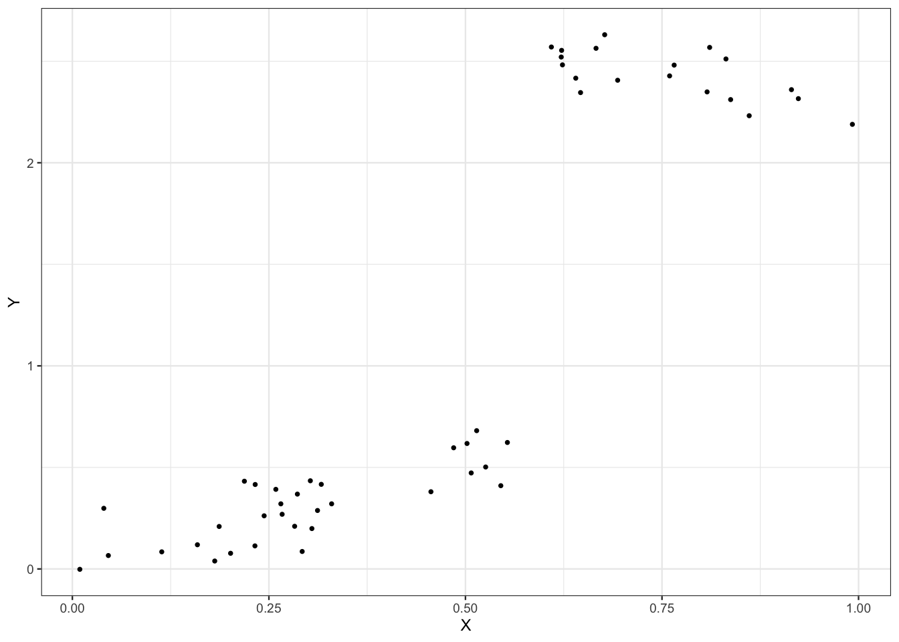
A l’aide de la fonction rpart du package rpart, construire un arbre permettant d’expliquer \(Y\) par \(X\).
library(rpart)tree <- rpart(Y~X,data=data1)Visualiser l’arbre à l’aide des fonctions prp et rpart.plot du package rpart.plot.
library(rpart.plot)prp(tree)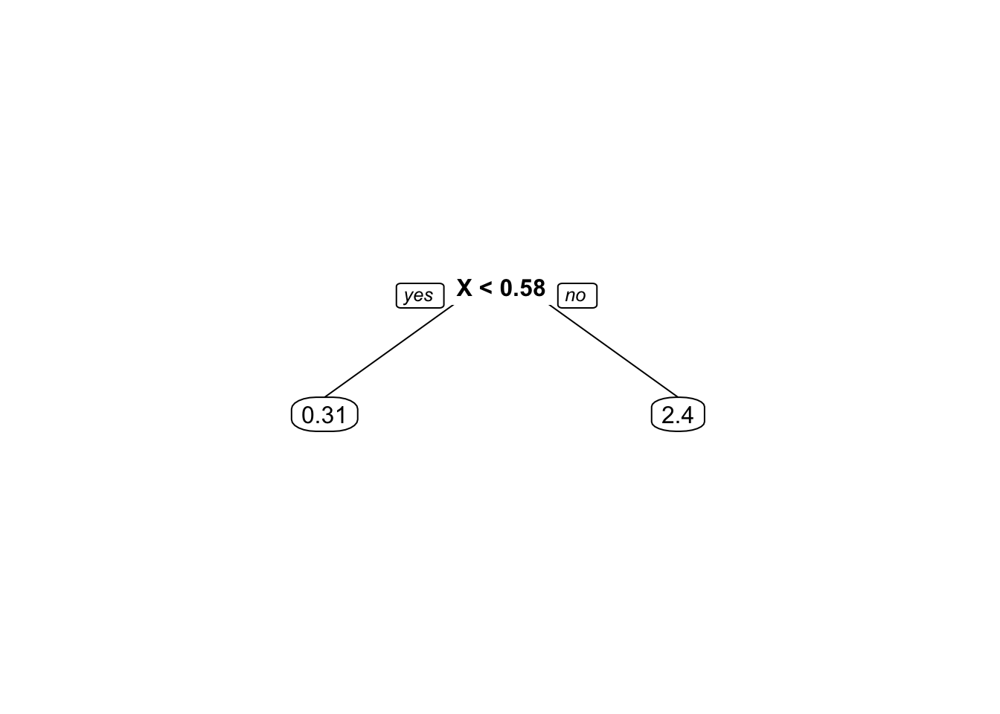
rpart.plot(tree)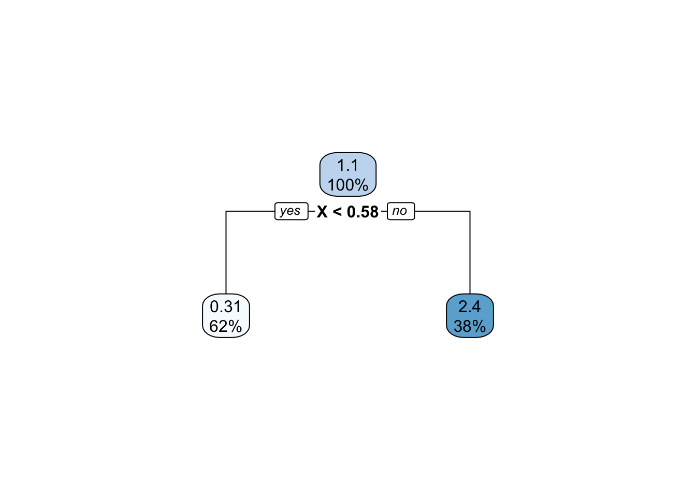
Écrire l’estimateur associé à l’arbre.
On a un modèle de régression
\[Y=m(X)+\varepsilon\]
où la fonction de régression (inconnue) \(m(x)\) est estimée par
\[\widehat m(x)=0.31\, \mathbf{1}_{x\lt 0.58}+2.4\,\mathbf{1}_{x\geq 0.58}.\]
Ajouter sur le graphe de la question 1 la partition définie par l’arbre ainsi que les valeurs prédites.
On obtient une partition avec 2 nœuds terminaux. Cette partition peut être résumée par la question : “est-ce que \(X\) est plus petit que 0.58 ?”.
df1 <- data.frame(x=c(0,0.58),xend=c(0.58,1), y=c(0.31,2.41),yend=c(0.31,2.41)) ggplot(data1)+aes(x=X,y=Y)+geom_point()+ geom_vline(xintercept = 0.58,size=1,color="blue")+ geom_segment(data=df1,aes(x=x,y=y,xend=xend,yend=yend), size=1,color="red")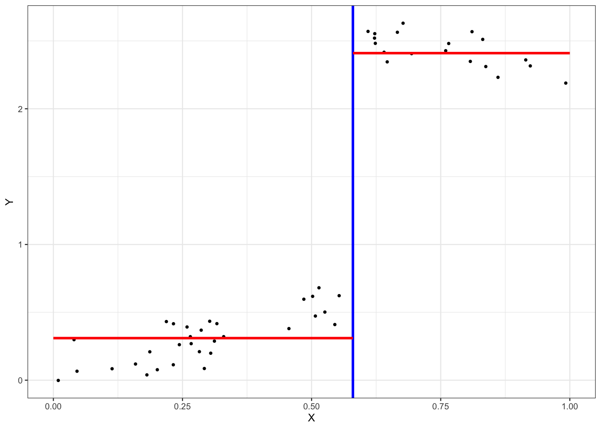
1.1.2 Arbres de classification
On considère les données suivantes où le problème est d’expliquer la variable binaire \(Y\) par deux variables quantitatives \(X_1\) et \(X_2\).
n <- 50
set.seed(12345)
X1 <- runif(n)
set.seed(5678)
X2 <- runif(n)
Y <- rep(0,n)
set.seed(54321)
Y[X1<=0.45] <- rbinom(sum(X1<=0.45),1,0.85)
set.seed(52432)
Y[X1>0.45] <- rbinom(sum(X1>0.45),1,0.15)
data2 <- data.frame(X1,X2,Y)
ggplot(data2)+aes(x=X1,y=X2,color=Y)+geom_point(size=2)+
scale_x_continuous(name="")+
scale_y_continuous(name="")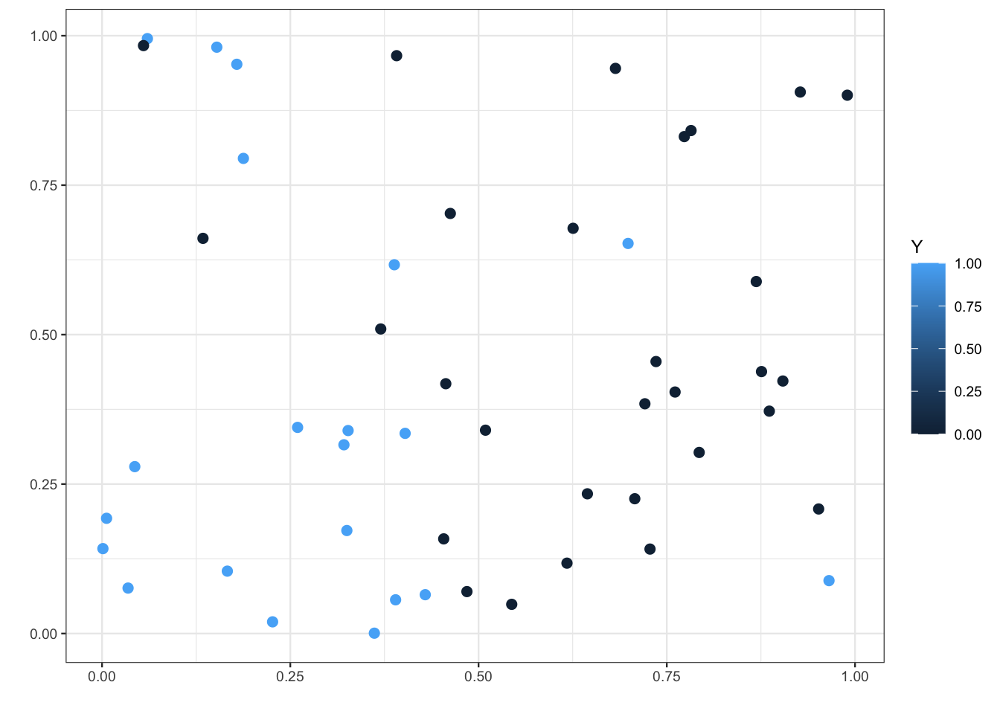
Construire un arbre permettant d’expliquer \(Y\) par \(X_1\) et \(X_2\). Représenter l’arbre et identifier l’éventuel problème.
tree <- rpart(Y~.,data=data2) rpart.plot(tree)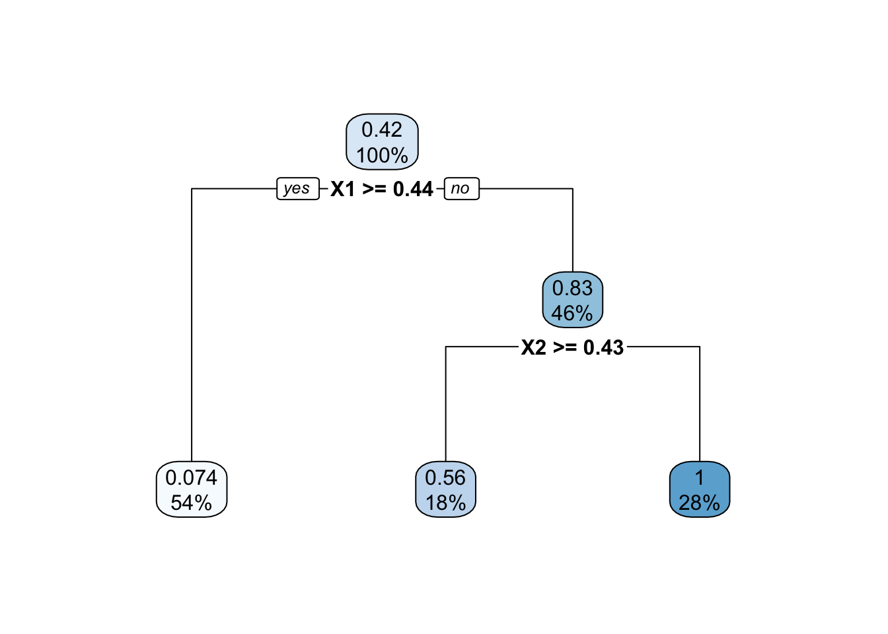
On observe que l’arbre construit est un arbre de régression, pas de classification. Cela vient du fait que \(Y\) est considérée par R comme une variable quantitative, il faut la convertir en facteur.
data2$Y <- as.factor(data2$Y) tree <- rpart(Y~.,data=data2) rpart.plot(tree)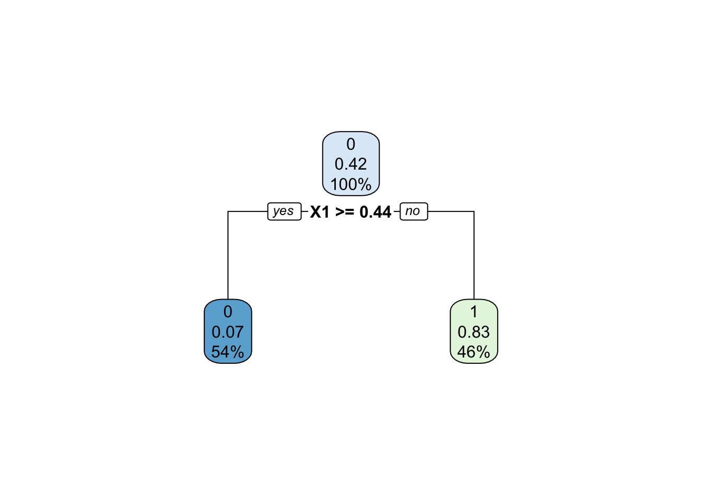
Tout est OK maintenant !
Écrire la règle de classification ainsi que la fonction de score définies par l’arbre.
La règle de classification est
\[\widehat g(x)=\mathbf{1}_{X_1\lt 0.44}.\]
La fonction de score est donnée par
\[\widehat S(x)=\widehat P(Y=1|X=x)=0.83\mathbf{1}_{X_1\lt 0.44}+0.07\mathbf{1}_{X_1\geq 0.44}.\]
Ajouter sur le graphe de la question 1 la partition définie par l’arbre.
ggplot(data2)+aes(x=X1,y=X2,color=Y,shape=Y)+geom_point(size=2)+ geom_vline(xintercept = 0.44,size=1,color="blue")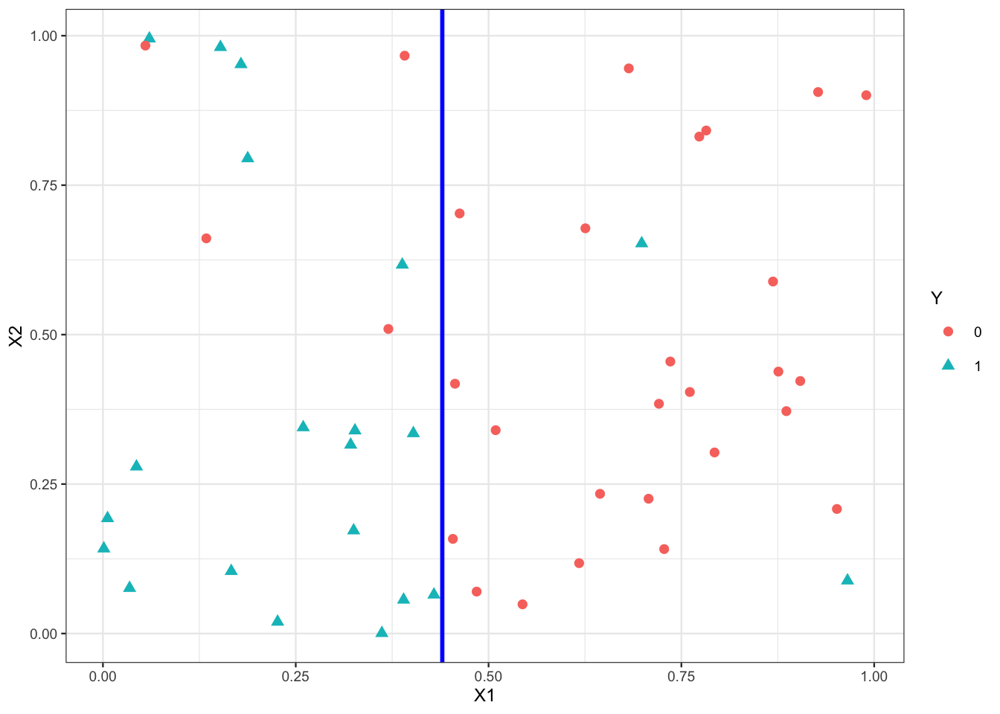
1.1.3 Entrée qualitative
On considère les données
n <- 100
X <- factor(rep(c("A","B","C","D"),n))
set.seed(1234)
Y[X=="A"] <- rbinom(sum(X=="A"),1,0.9)
Y[X=="B"] <- rbinom(sum(X=="B"),1,0.25)
Y[X=="C"] <- rbinom(sum(X=="C"),1,0.8)
Y[X=="D"] <- rbinom(sum(X=="D"),1,0.2)
Y <- as.factor(Y)
data3 <- data.frame(X,Y)Construire un arbre permettant d’expliquer \(Y\) par \(X\).
tree3 <- rpart(Y~.,data=data3) rpart.plot(tree3)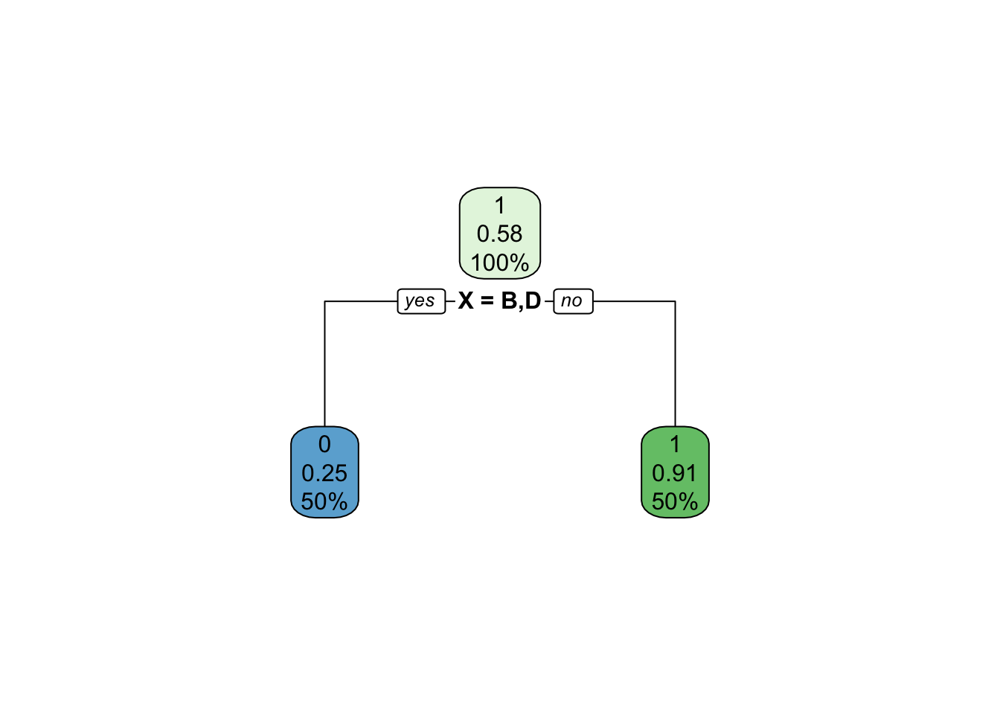
Expliquer la manière dont l’arbre est construit dans ce cadre là.
La variable étant qualitative, on ne cherche pas un seuil de coupure pour diviser un nœud en 2. On va ici considérer toutes les partitions binaires de l’ensemble \(\{A,B,C,D\}\). La meilleure partition est \(\{\{A,C\},\{B,D\}\}\).
1.2 Élagage
Le procédé de coupe présenté précédemment permet de définir un très grand nombre d’arbres à partir d’un jeu de données (arbre sans coupure, avec une coupure, deux coupures…). Se pose alors la question de trouver le meilleur arbre parmi tous les arbres possibles. Une première idée serait de choisir parmi tous les arbres possibles celui qui optimise un critère de performance. Cette approche, bien que cohérente, n’est généralement pas possible à mettre en œuvre en pratique car le nombre d’arbres à considérer est souvent trop important.
La méthode CART propose une procédure permettant de choisir automatiquement un arbre en 3 étapes :
- On construit un arbre maximal (très profond) \(\mathcal T_{max}\) ;
- On sélectionne une suite d’arbres emboités : \[\mathcal T_{max}=\mathcal T_0\supset\mathcal T_1\supset\dots\supset \mathcal T_K.\] La sélection s’effectue en optimisant un critère Cout/complexité qui permet de réguler le compromis entre ajustement et complexité de l’arbre.
- On sélectionne un arbre dans cette sous-suite en optimisant un critère de performance.
Cette approche revient à choisir un sous-arbre de l’arbre \(\mathcal T_\text{max}\), c’est-à-dire à enlever des branches à \(T_\text{max}\), c’est pourquoi on parle d’élagage.
1.2.1 Élagage pour un problème de régression
On considère les données Carseats du package ISLR.
library(ISLR)
data(Carseats)
summary(Carseats) Sales CompPrice Income Advertising
Min. : 0.000 Min. : 77 Min. : 21.00 Min. : 0.000
1st Qu.: 5.390 1st Qu.:115 1st Qu.: 42.75 1st Qu.: 0.000
Median : 7.490 Median :125 Median : 69.00 Median : 5.000
Mean : 7.496 Mean :125 Mean : 68.66 Mean : 6.635
3rd Qu.: 9.320 3rd Qu.:135 3rd Qu.: 91.00 3rd Qu.:12.000
Max. :16.270 Max. :175 Max. :120.00 Max. :29.000
Population Price ShelveLoc Age Education
Min. : 10.0 Min. : 24.0 Bad : 96 Min. :25.00 Min. :10.0
1st Qu.:139.0 1st Qu.:100.0 Good : 85 1st Qu.:39.75 1st Qu.:12.0
Median :272.0 Median :117.0 Medium:219 Median :54.50 Median :14.0
Mean :264.8 Mean :115.8 Mean :53.32 Mean :13.9
3rd Qu.:398.5 3rd Qu.:131.0 3rd Qu.:66.00 3rd Qu.:16.0
Max. :509.0 Max. :191.0 Max. :80.00 Max. :18.0
Urban US
No :118 No :142
Yes:282 Yes:258
On cherche ici à expliquer la variable quantitative Sales par les autres variables.
Construire un arbre permettant de répondre au problème.
tree <- rpart(Sales~.,data=Carseats) rpart.plot(tree)
Expliquer les sorties de la fonction printcp appliquée à l’arbre de la question précédente et calculer le dernier terme de la colonne rel error.
printcp(tree)Regression tree: rpart(formula = Sales ~ ., data = Carseats) Variables actually used in tree construction: [1] Advertising Age CompPrice Income Population Price [7] ShelveLoc Root node error: 3182.3/400 = 7.9557 n= 400 CP nsplit rel error xerror xstd 1 0.250510 0 1.00000 1.00492 0.069530 2 0.105073 1 0.74949 0.75877 0.051613 3 0.051121 2 0.64442 0.68283 0.046333 4 0.045671 3 0.59330 0.64240 0.043550 5 0.033592 4 0.54763 0.60051 0.041716 6 0.024063 5 0.51403 0.58903 0.039691 7 0.023948 6 0.48997 0.59472 0.039561 8 0.022163 7 0.46602 0.58972 0.039539 9 0.016043 8 0.44386 0.58329 0.039731 10 0.014027 9 0.42782 0.57392 0.038516 11 0.013145 11 0.39976 0.57780 0.038529 12 0.012711 12 0.38662 0.58719 0.038339 13 0.012147 13 0.37391 0.58970 0.038419 14 0.011888 14 0.36176 0.58850 0.038291 15 0.010778 15 0.34987 0.58673 0.038383 16 0.010506 16 0.33909 0.57818 0.038886 17 0.010000 17 0.32859 0.57320 0.038277plotcp(tree)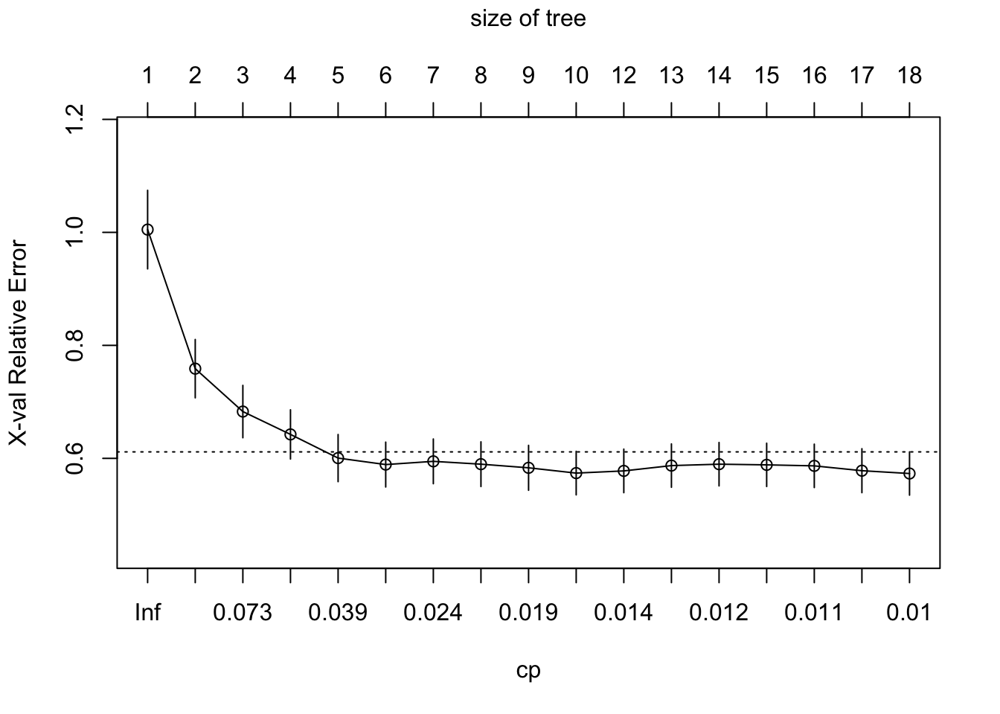
On peut lire des informations sur la suite d’arbres emboîtés, cette suite est de longueur 17 ici. Dans le dernier tableau, chaque ligne représente un arbre de la suite et on a dans les colonnes :
- CP : le paramètre de complexité, plus il est petit plus l’arbre est profond ;
- nsplit : nombre de coupures de l’arbre ;
- rel error contient l’erreur calculée sur les données d’apprentissage. Cette erreur décroit lorsque la complexité augmente et peut être interprétée comme une erreur d’ajustement ;
- xerror : contient l’erreur calculée par validation croisée. Elle peut être interprétée comme une erreur de prévision ;
- xstd correspond à l’écart type estimé de l’erreur.
Les types d’erreurs dépendent du problème considéré. Vu qu’on est ici sur un problème de régression, c’est l’erreur quadratique moyenne qui est considérée. De plus ces erreurs sont normalisées par rapport à l’erreur de l’arbre racine (sans coupure). Ainsi on retrouve l’erreur demandée avec
Carseats |> mutate(fitted=predict(tree)) |> summarise(MSE=mean((fitted-Sales)^2)/mean((Sales-mean(Sales))^2))MSE 1 0.3285866Construire une suite d’arbres plus grandes en jouant sur les paramètres
cpetminsplitde la fonction rpart.Il suffit de diminuer les valeurs par défaut de ces paramètres.
set.seed(123) tree1 <- rpart(Sales~.,data=Carseats,cp=0.00001,minsplit=2) printcp(tree1)Regression tree: rpart(formula = Sales ~ ., data = Carseats, cp = 1e-05, minsplit = 2) Variables actually used in tree construction: [1] Advertising Age CompPrice Education Income Population [7] Price ShelveLoc Urban US Root node error: 3182.3/400 = 7.9557 n= 400 CP nsplit rel error xerror xstd 1 2.5051e-01 0 1.00000000 1.00632 0.069635 2 1.0507e-01 1 0.74948961 0.75985 0.051802 3 5.1121e-02 2 0.64441706 0.67592 0.044633 4 4.5671e-02 3 0.59329646 0.67720 0.043488 5 3.3592e-02 4 0.54762521 0.64640 0.043209 6 2.4063e-02 5 0.51403284 0.64674 0.041192 7 2.3948e-02 6 0.48997005 0.63825 0.041103 8 2.2163e-02 7 0.46602225 0.63234 0.040983 9 1.6043e-02 8 0.44385897 0.61886 0.039262 10 1.4027e-02 9 0.42781645 0.61392 0.039072 11 1.3145e-02 11 0.39976237 0.61848 0.039060 12 1.2711e-02 12 0.38661699 0.62070 0.039293 13 1.2147e-02 13 0.37390609 0.62158 0.039768 14 1.1888e-02 14 0.36175900 0.62655 0.039848 15 1.0778e-02 15 0.34987122 0.61565 0.039116 16 1.0506e-02 16 0.33909277 0.62089 0.039292 17 1.0301e-02 17 0.32858663 0.62477 0.039223 18 9.8052e-03 18 0.31828518 0.62074 0.039205 19 9.5324e-03 20 0.29867475 0.62340 0.039696 20 9.3098e-03 21 0.28914234 0.61989 0.039722 21 8.6039e-03 22 0.27983257 0.62566 0.040168 22 8.5728e-03 23 0.27122871 0.61686 0.039659 23 7.7737e-03 25 0.25408305 0.62076 0.040607 24 7.4353e-03 26 0.24630936 0.61125 0.040480 25 6.2838e-03 28 0.23143882 0.59597 0.039395 26 6.1242e-03 29 0.22515504 0.60994 0.040169 27 5.6953e-03 30 0.21903085 0.59896 0.039173 28 5.5687e-03 31 0.21333555 0.60151 0.039820 29 5.4134e-03 32 0.20776686 0.60041 0.039844 30 5.1373e-03 33 0.20235343 0.58408 0.039291 31 4.9581e-03 34 0.19721608 0.58631 0.039265 32 4.8270e-03 35 0.19225798 0.58969 0.039393 33 4.5558e-03 36 0.18743102 0.59070 0.039253 34 4.5456e-03 37 0.18287525 0.58833 0.038997 35 4.3739e-03 38 0.17832965 0.58757 0.038982 36 4.3307e-03 39 0.17395578 0.58716 0.038985 37 4.2485e-03 40 0.16962503 0.58706 0.039096 38 4.0980e-03 41 0.16537650 0.58472 0.039006 39 4.0525e-03 42 0.16127847 0.58935 0.039188 40 4.0054e-03 43 0.15722596 0.58756 0.038706 41 3.6917e-03 44 0.15322052 0.60472 0.039435 42 3.6352e-03 45 0.14952883 0.60179 0.039308 43 3.5301e-03 46 0.14589367 0.60395 0.039286 44 3.5196e-03 47 0.14236356 0.60402 0.039279 45 2.8653e-03 48 0.13884396 0.59319 0.038874 46 2.8565e-03 49 0.13597868 0.58540 0.039159 47 2.8565e-03 50 0.13312217 0.58540 0.039159 48 2.7253e-03 51 0.13026571 0.58760 0.039209 49 2.6841e-03 52 0.12754044 0.58585 0.038937 50 2.6829e-03 54 0.12217220 0.58743 0.038915 51 2.6660e-03 55 0.11948928 0.58794 0.038911 52 2.4588e-03 56 0.11682326 0.58713 0.038864 53 2.3693e-03 57 0.11436443 0.57598 0.038151 54 2.3018e-03 58 0.11199508 0.57746 0.038203 55 2.2746e-03 60 0.10739152 0.58523 0.039585 56 2.2540e-03 61 0.10511688 0.58489 0.039595 57 2.1781e-03 62 0.10286290 0.58466 0.039588 58 2.1645e-03 63 0.10068483 0.58575 0.039509 59 2.0950e-03 64 0.09852033 0.58152 0.039361 60 2.0945e-03 65 0.09642538 0.58236 0.039446 61 2.0740e-03 66 0.09433084 0.58431 0.039597 62 1.8864e-03 67 0.09225680 0.57892 0.039320 63 1.8413e-03 68 0.09037038 0.58456 0.039520 64 1.7921e-03 69 0.08852905 0.58578 0.040068 65 1.7167e-03 70 0.08673697 0.58533 0.039995 66 1.6766e-03 71 0.08502031 0.58336 0.039558 67 1.6704e-03 72 0.08334367 0.58559 0.039491 68 1.6064e-03 73 0.08167332 0.58367 0.039470 69 1.6055e-03 74 0.08006697 0.58229 0.039276 70 1.5103e-03 75 0.07846149 0.58881 0.039911 71 1.4967e-03 76 0.07695120 0.58862 0.039908 72 1.4907e-03 77 0.07545453 0.59042 0.040029 73 1.4007e-03 78 0.07396387 0.60029 0.040368 74 1.4002e-03 79 0.07256317 0.60033 0.040358 75 1.3613e-03 80 0.07116301 0.60705 0.040742 76 1.3589e-03 81 0.06980172 0.61439 0.041431 77 1.3462e-03 82 0.06844282 0.61457 0.041431 78 1.3351e-03 83 0.06709659 0.61405 0.041405 79 1.3304e-03 84 0.06576144 0.61487 0.041409 80 1.3146e-03 85 0.06443102 0.61487 0.041409 81 1.2795e-03 86 0.06311644 0.61217 0.041323 82 1.2412e-03 87 0.06183696 0.61153 0.041238 83 1.2373e-03 88 0.06059575 0.61610 0.041280 84 1.2135e-03 89 0.05935843 0.61519 0.041307 85 1.2002e-03 91 0.05693148 0.61097 0.041152 86 1.1269e-03 92 0.05573126 0.61178 0.041184 87 1.0919e-03 93 0.05460435 0.60862 0.041145 88 1.0898e-03 94 0.05351243 0.60925 0.041145 89 1.0864e-03 95 0.05242260 0.60925 0.041145 90 1.0646e-03 96 0.05133621 0.60693 0.041083 91 1.0116e-03 97 0.05027156 0.60260 0.040185 92 9.5940e-04 98 0.04925996 0.60122 0.040328 93 8.9105e-04 99 0.04830056 0.60234 0.040289 94 8.8465e-04 100 0.04740951 0.60105 0.040619 95 8.7611e-04 101 0.04652486 0.60055 0.040661 96 8.5644e-04 102 0.04564875 0.60111 0.040661 97 8.4568e-04 103 0.04479231 0.60150 0.040657 98 8.3004e-04 104 0.04394663 0.60427 0.040867 99 8.0748e-04 105 0.04311659 0.60590 0.040864 100 7.9944e-04 106 0.04230912 0.60627 0.040864 101 7.5680e-04 107 0.04150968 0.61302 0.041688 102 7.4082e-04 108 0.04075288 0.61164 0.041485 103 7.4043e-04 109 0.04001206 0.61183 0.041479 104 7.3510e-04 110 0.03927163 0.61163 0.041483 105 7.0107e-04 111 0.03853653 0.61182 0.041563 106 6.9184e-04 112 0.03783546 0.60947 0.041716 107 6.7585e-04 113 0.03714362 0.60947 0.041716 108 6.7373e-04 114 0.03646776 0.60689 0.041731 109 6.7173e-04 115 0.03579403 0.60689 0.041731 110 6.6783e-04 116 0.03512230 0.60591 0.041707 111 6.6518e-04 117 0.03445448 0.60613 0.041700 112 6.6451e-04 118 0.03378929 0.60613 0.041700 113 6.0900e-04 119 0.03312478 0.60732 0.041781 114 6.0343e-04 120 0.03251578 0.61077 0.042036 115 5.9465e-04 121 0.03191235 0.61269 0.042102 116 5.8550e-04 123 0.03072304 0.61208 0.042081 117 5.8340e-04 124 0.03013754 0.61187 0.042084 118 5.6972e-04 125 0.02955414 0.61258 0.042084 119 5.6433e-04 126 0.02898442 0.61258 0.042084 120 5.6323e-04 127 0.02842009 0.61228 0.042075 121 5.4821e-04 128 0.02785686 0.60943 0.042014 122 5.4339e-04 131 0.02621222 0.60980 0.042021 123 5.1968e-04 132 0.02566882 0.60983 0.042171 124 5.0869e-04 133 0.02514915 0.60906 0.042168 125 5.0157e-04 134 0.02464045 0.60828 0.042297 126 4.7302e-04 135 0.02413889 0.61003 0.042276 127 4.6969e-04 136 0.02366587 0.60911 0.042228 128 4.6775e-04 137 0.02319618 0.61118 0.042218 129 4.6669e-04 138 0.02272842 0.61118 0.042218 130 4.5761e-04 139 0.02226174 0.60991 0.042232 131 4.5283e-04 140 0.02180413 0.60956 0.042235 132 4.5270e-04 141 0.02135130 0.61176 0.042356 133 4.5251e-04 142 0.02089861 0.61176 0.042356 134 4.4875e-04 143 0.02044610 0.61176 0.042356 135 4.4874e-04 144 0.01999735 0.61164 0.042360 136 4.4666e-04 145 0.01954861 0.61164 0.042360 137 4.3805e-04 146 0.01910194 0.61410 0.042468 138 4.2159e-04 147 0.01866389 0.61468 0.042470 139 4.1179e-04 148 0.01824230 0.61626 0.042531 140 3.8646e-04 149 0.01783051 0.61657 0.042546 141 3.6959e-04 150 0.01744404 0.61985 0.042911 142 3.3035e-04 151 0.01707446 0.62146 0.043372 143 3.0799e-04 152 0.01674411 0.62258 0.043333 144 3.0672e-04 153 0.01643612 0.62274 0.043330 145 3.0672e-04 154 0.01612940 0.62274 0.043330 146 3.0672e-04 155 0.01582268 0.62274 0.043330 147 3.0544e-04 156 0.01551596 0.62274 0.043330 148 3.0094e-04 157 0.01521052 0.62395 0.043352 149 2.9757e-04 158 0.01490958 0.62467 0.043363 150 2.8981e-04 159 0.01461201 0.62274 0.043380 151 2.8923e-04 160 0.01432220 0.62270 0.043354 152 2.8782e-04 161 0.01403296 0.62400 0.043499 153 2.8635e-04 162 0.01374515 0.62400 0.043499 154 2.8189e-04 163 0.01345879 0.62219 0.043487 155 2.8173e-04 164 0.01317690 0.62253 0.043478 156 2.6988e-04 165 0.01289517 0.62531 0.043675 157 2.6283e-04 166 0.01262530 0.62452 0.043671 158 2.5737e-04 167 0.01236246 0.62258 0.043382 159 2.5139e-04 168 0.01210509 0.62028 0.043359 160 2.5003e-04 169 0.01185370 0.61871 0.043243 161 2.3771e-04 170 0.01160367 0.61747 0.043178 162 2.3512e-04 171 0.01136596 0.61853 0.043182 163 2.2600e-04 172 0.01113084 0.61800 0.043165 164 2.1796e-04 173 0.01090483 0.61542 0.043149 165 2.1590e-04 174 0.01068688 0.61466 0.043133 166 2.1121e-04 175 0.01047098 0.61339 0.043099 167 2.0973e-04 176 0.01025977 0.61238 0.043036 168 2.0949e-04 178 0.00984031 0.61238 0.043036 169 2.0779e-04 179 0.00963081 0.61220 0.043040 170 2.0120e-04 180 0.00942302 0.61280 0.043025 171 2.0025e-04 181 0.00922182 0.61280 0.043025 172 1.9247e-04 182 0.00902157 0.61353 0.043060 173 1.8668e-04 183 0.00882910 0.61383 0.043085 174 1.7976e-04 184 0.00864242 0.61349 0.043056 175 1.6630e-04 185 0.00846266 0.61532 0.043131 176 1.6596e-04 186 0.00829637 0.61615 0.043142 177 1.6594e-04 187 0.00813041 0.61615 0.043142 178 1.6347e-04 188 0.00796447 0.61623 0.043140 179 1.6290e-04 189 0.00780100 0.61623 0.043140 180 1.5712e-04 190 0.00763810 0.61644 0.043133 181 1.5619e-04 191 0.00748098 0.61562 0.043119 182 1.5210e-04 192 0.00732479 0.61504 0.043100 183 1.4745e-04 193 0.00717270 0.61484 0.043106 184 1.4354e-04 194 0.00702525 0.61434 0.043095 185 1.3883e-04 195 0.00688171 0.61338 0.043090 186 1.3883e-04 196 0.00674288 0.61357 0.043102 187 1.3613e-04 197 0.00660405 0.61349 0.043104 188 1.3589e-04 198 0.00646792 0.61374 0.043123 189 1.3299e-04 199 0.00633203 0.61225 0.043031 190 1.3241e-04 200 0.00619904 0.61244 0.043040 191 1.3011e-04 201 0.00606664 0.61182 0.043038 192 1.2674e-04 202 0.00593652 0.61207 0.043052 193 1.2674e-04 203 0.00580978 0.61250 0.043040 194 1.2167e-04 204 0.00568304 0.61345 0.043093 195 1.2167e-04 205 0.00556136 0.61264 0.043092 196 1.2105e-04 206 0.00543969 0.61264 0.043092 197 1.1352e-04 207 0.00531864 0.61255 0.043081 198 1.0898e-04 208 0.00520512 0.61236 0.043083 199 1.0860e-04 209 0.00509614 0.61259 0.043076 200 1.0592e-04 210 0.00498754 0.61259 0.043076 201 1.0265e-04 211 0.00488162 0.61474 0.043307 202 9.6794e-05 212 0.00477896 0.61439 0.043163 203 9.5532e-05 213 0.00468217 0.61428 0.043175 204 9.4042e-05 214 0.00458664 0.61450 0.043168 205 9.1257e-05 215 0.00449260 0.61509 0.043172 206 9.0753e-05 216 0.00440134 0.61548 0.043188 207 8.9624e-05 217 0.00431059 0.61573 0.043180 208 8.8270e-05 218 0.00422096 0.61566 0.043182 209 8.7486e-05 219 0.00413269 0.61545 0.043188 210 8.3729e-05 220 0.00404521 0.61466 0.043180 211 8.1451e-05 221 0.00396148 0.61426 0.043159 212 7.9204e-05 222 0.00388003 0.61366 0.043149 213 7.7471e-05 224 0.00372162 0.61346 0.043143 214 7.6989e-05 225 0.00364415 0.61346 0.043143 215 7.4805e-05 227 0.00349017 0.61288 0.043144 216 7.2925e-05 228 0.00341536 0.61356 0.043182 217 7.2160e-05 229 0.00334244 0.61239 0.043184 218 7.1694e-05 230 0.00327028 0.61239 0.043184 219 6.9264e-05 231 0.00319859 0.61315 0.043444 220 6.8065e-05 232 0.00312932 0.61316 0.043445 221 6.8065e-05 233 0.00306126 0.61363 0.043442 222 6.7977e-05 234 0.00299319 0.61363 0.043442 223 6.6383e-05 235 0.00292522 0.61341 0.043441 224 6.6383e-05 236 0.00285883 0.61341 0.043441 225 6.6383e-05 237 0.00279245 0.61341 0.043441 226 6.6203e-05 238 0.00272607 0.61341 0.043441 227 6.5697e-05 239 0.00265986 0.61341 0.043441 228 6.5373e-05 240 0.00259417 0.61341 0.043441 229 6.4356e-05 241 0.00252879 0.61327 0.043444 230 6.3372e-05 242 0.00246444 0.61244 0.043314 231 6.2228e-05 243 0.00240107 0.61268 0.043307 232 6.2225e-05 244 0.00233884 0.61268 0.043307 233 6.0397e-05 245 0.00227661 0.61266 0.043308 234 5.8464e-05 246 0.00221622 0.61302 0.043300 235 5.8137e-05 248 0.00209929 0.61288 0.043302 236 5.4694e-05 249 0.00204115 0.61454 0.043304 237 5.2855e-05 251 0.00193176 0.61433 0.043357 238 5.1331e-05 252 0.00187891 0.61341 0.043318 239 5.1048e-05 253 0.00182758 0.61222 0.043262 240 4.9324e-05 255 0.00172548 0.61222 0.043262 241 4.9278e-05 256 0.00167616 0.61214 0.043261 242 4.9278e-05 257 0.00162688 0.61214 0.043261 243 4.9273e-05 258 0.00157760 0.61214 0.043261 244 4.5298e-05 259 0.00152833 0.61225 0.043257 245 4.3577e-05 260 0.00148303 0.61182 0.043250 246 4.3370e-05 261 0.00143945 0.61153 0.043256 247 4.2422e-05 262 0.00139608 0.61153 0.043256 248 4.0867e-05 263 0.00135366 0.61087 0.043246 249 3.9280e-05 264 0.00131279 0.61059 0.043234 250 3.7840e-05 265 0.00127351 0.61039 0.043239 251 3.7840e-05 266 0.00123567 0.61013 0.043231 252 3.7840e-05 267 0.00119783 0.61013 0.043231 253 3.6955e-05 268 0.00115999 0.61040 0.043226 254 3.5847e-05 269 0.00112304 0.61040 0.043226 255 3.5216e-05 270 0.00108719 0.61040 0.043226 256 3.4708e-05 271 0.00105197 0.61069 0.043225 257 3.4032e-05 272 0.00101727 0.61083 0.043221 258 3.3519e-05 273 0.00098323 0.61077 0.043223 259 3.3247e-05 274 0.00094971 0.61077 0.043223 260 2.9981e-05 275 0.00091647 0.61135 0.043216 261 2.9052e-05 276 0.00088649 0.61163 0.043224 262 2.7245e-05 277 0.00085744 0.61167 0.043189 263 2.5663e-05 278 0.00083019 0.61090 0.043097 264 2.5663e-05 279 0.00080453 0.61090 0.043097 265 2.2814e-05 280 0.00077886 0.61105 0.043094 266 2.2688e-05 281 0.00075605 0.61153 0.043120 267 2.2128e-05 282 0.00073336 0.61091 0.043128 268 2.1877e-05 283 0.00071123 0.61118 0.043154 269 2.1510e-05 284 0.00068936 0.61118 0.043154 270 2.0132e-05 285 0.00066785 0.61155 0.043169 271 2.0132e-05 286 0.00064772 0.61209 0.043176 272 1.8231e-05 287 0.00062758 0.61222 0.043173 273 1.8163e-05 288 0.00060935 0.61289 0.043189 274 1.7618e-05 289 0.00059119 0.61289 0.043189 275 1.7618e-05 290 0.00057357 0.61289 0.043189 276 1.7608e-05 291 0.00055595 0.61289 0.043189 277 1.7110e-05 292 0.00053834 0.61261 0.043152 278 1.5272e-05 293 0.00052123 0.61323 0.043154 279 1.5099e-05 294 0.00050596 0.61262 0.043101 280 1.4162e-05 296 0.00047576 0.61252 0.043100 281 1.4162e-05 297 0.00046160 0.61237 0.043096 282 1.4141e-05 298 0.00044744 0.61237 0.043096 283 1.4141e-05 300 0.00041916 0.61237 0.043096 284 1.3214e-05 301 0.00040502 0.61212 0.043066 285 1.3214e-05 302 0.00039180 0.61186 0.043063 286 1.3093e-05 303 0.00037859 0.61186 0.043063 287 1.2318e-05 304 0.00036550 0.61172 0.043054 288 1.2318e-05 305 0.00035318 0.61141 0.043044 289 1.1454e-05 306 0.00034086 0.61140 0.043044 290 1.1082e-05 307 0.00032941 0.61149 0.043050 291 1.0621e-05 308 0.00031832 0.61200 0.043160 292 1.0000e-05 312 0.00027584 0.61200 0.043160On obtient ici une suite de près de 300 arbres. On remarque que
- l’erreur d’ajustement ne cesse de décroître, ceci est logique vu le procédé de construction : on ajuste de mieux en mieux lorsqu’on augmente le nombre de coupures ;
- l’erreur de prévision décroit avant de d’augmenter à nouveau. C’est le phénomène bien connu du sur-apprentissage.
Expliquer la sortie de la fonction plotcp appliquée à l’arbre de la question précédente.
plotcp(tree1)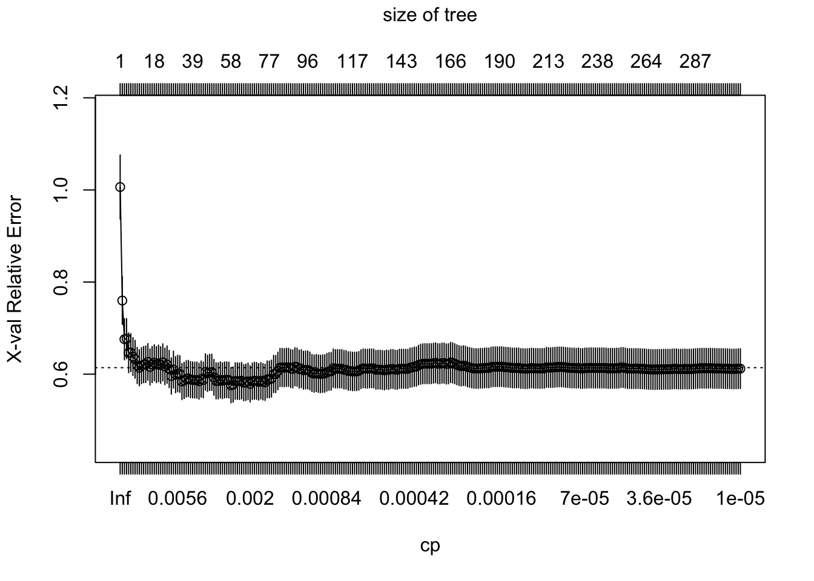
On obtient un graphe qui permet de visualiser l’erreur quadratique calculée par validation croisée (erreur de prévision) en fonction du paramètre cp ou nsplit.
Sélectionner le “meilleur” arbre dans la suite construite.
La manière classique revient à choisir l’arbre qui a la plus petite erreur de prévision. Cela revient à aller chercher dans le tableau de la fonction printcp l’arbre qiu possède la plus petite erreur de prévision. On peut obtenir la valeur optimale de cp avec
cp_opt <- tree1$cptable |> as.data.frame() |> filter(xerror==min(xerror)) |> dplyr::select(CP) |> as.numeric() cp_opt[1] 0.002369349Visualiser l’arbre choisi (utiliser la fonction prune).
tree_opt <- prune(tree,cp=cp_opt) rpart.plot(tree_opt)
La fonction visTree du package visNetwork permet de donner une visualisation interactive de l’arbre.
library(visNetwork) visTree(tree_opt)Une application Shiny est également proposée pour visualiser les arbres
visTreeEditor(Carseats)On souhaite prédire les valeurs de \(Y\) pour de nouveaux individus à partir de l’arbre sélectionné. Pour simplifier on considèrera ces 4 individus :
(new_ind <- Carseats |> as_tibble() |> slice(3,58,185,218) |> dplyr::select(-Sales))# A tibble: 4 × 10 CompPrice Income Advertising Population Price ShelveLoc Age Education Urban <dbl> <dbl> <dbl> <dbl> <dbl> <fct> <dbl> <dbl> <fct> 1 113 35 10 269 80 Medium 59 12 Yes 2 93 91 0 22 117 Bad 75 11 Yes 3 132 33 7 35 97 Medium 60 11 No 4 106 44 0 481 111 Medium 70 14 No # ℹ 1 more variable: US <fct>Calculer les valeurs prédites.
predict(tree_opt,newdata=new_ind)1 2 3 4 7.590278 3.767200 7.590278 6.626512Séparer les données en un échantillon d’apprentissage de taille 250 et un échantillon test de taille 150.
n.train <- 250 set.seed(1234) perm <- sample(nrow(Carseats)) train <- Carseats[perm[1:n.train],] test <- Carseats[-perm[1:n.train],]On considère la suite d’arbres définie par
set.seed(4321) tree <- rpart(Sales~.,data=train,cp=0.000001,minsplit=2)Dans cette suite, sélectionner
- un arbre très simple (avec 2 ou 3 coupures)
- un arbre très grand
- l’arbre optimal (avec la procédure d’élagage classique).
printcp(tree)Regression tree: rpart(formula = Sales ~ ., data = train, cp = 1e-06, minsplit = 2) Variables actually used in tree construction: [1] Advertising Age CompPrice Education Income Population [7] Price ShelveLoc Urban US Root node error: 1930.1/250 = 7.7203 n= 250 CP nsplit rel error xerror xstd 1 2.1456e-01 0 1.0000e+00 1.00199 0.090218 2 9.9792e-02 1 7.8544e-01 0.86595 0.075513 3 5.5822e-02 2 6.8565e-01 0.82348 0.071817 4 5.5012e-02 3 6.2983e-01 0.76327 0.065209 5 4.7593e-02 4 5.7481e-01 0.75011 0.065969 6 3.2780e-02 5 5.2722e-01 0.69666 0.062659 7 3.2081e-02 6 4.9444e-01 0.71690 0.062718 8 2.8747e-02 7 4.6236e-01 0.71639 0.062790 9 2.7988e-02 8 4.3361e-01 0.69569 0.059348 10 1.8568e-02 9 4.0563e-01 0.70266 0.064934 11 1.8305e-02 10 3.8706e-01 0.75844 0.071881 12 1.7705e-02 11 3.6875e-01 0.75332 0.071355 13 1.6028e-02 12 3.5105e-01 0.77667 0.075496 14 1.4152e-02 13 3.3502e-01 0.76655 0.074752 15 1.4119e-02 14 3.2087e-01 0.80299 0.082942 16 1.1545e-02 15 3.0675e-01 0.82136 0.082988 17 1.1033e-02 16 2.9520e-01 0.80368 0.081778 18 1.0407e-02 17 2.8417e-01 0.80205 0.081219 19 9.6380e-03 18 2.7377e-01 0.80105 0.081149 20 9.4448e-03 19 2.6413e-01 0.79823 0.081147 21 9.2825e-03 21 2.4524e-01 0.79320 0.081143 22 8.7958e-03 22 2.3596e-01 0.76562 0.078130 23 8.7574e-03 23 2.2716e-01 0.76141 0.078054 24 7.9616e-03 24 2.1840e-01 0.76444 0.077936 25 7.0728e-03 25 2.1044e-01 0.77626 0.077783 26 7.0288e-03 27 1.9630e-01 0.77706 0.078603 27 6.7205e-03 28 1.8927e-01 0.77012 0.077833 28 6.5421e-03 29 1.8255e-01 0.76052 0.075687 29 6.4728e-03 30 1.7600e-01 0.77588 0.075711 30 5.7670e-03 31 1.6953e-01 0.77776 0.075870 31 5.0693e-03 32 1.6376e-01 0.79694 0.077306 32 4.9069e-03 34 1.5363e-01 0.78951 0.077248 33 4.7845e-03 35 1.4872e-01 0.78954 0.077227 34 4.7623e-03 36 1.4393e-01 0.79479 0.078655 35 4.7423e-03 38 1.3441e-01 0.79479 0.078655 36 4.3579e-03 39 1.2967e-01 0.78334 0.078557 37 4.3530e-03 40 1.2531e-01 0.78187 0.078607 38 4.1413e-03 41 1.2096e-01 0.78700 0.078606 39 4.0455e-03 42 1.1681e-01 0.78351 0.078553 40 3.9302e-03 43 1.1277e-01 0.76858 0.075026 41 3.8957e-03 45 1.0491e-01 0.76858 0.075026 42 3.8803e-03 46 1.0101e-01 0.77054 0.075020 43 3.8596e-03 47 9.7133e-02 0.77054 0.075020 44 3.5520e-03 48 9.3273e-02 0.76480 0.074222 45 3.5181e-03 49 8.9721e-02 0.75251 0.074226 46 3.4216e-03 50 8.6203e-02 0.75336 0.074228 47 3.1866e-03 51 8.2782e-02 0.75473 0.074308 48 3.1193e-03 52 7.9595e-02 0.75621 0.074297 49 3.0949e-03 53 7.6476e-02 0.75747 0.074346 50 2.8538e-03 54 7.3381e-02 0.76454 0.074387 51 2.7245e-03 55 7.0527e-02 0.75920 0.074369 52 2.6778e-03 56 6.7802e-02 0.75964 0.074366 53 2.2840e-03 57 6.5125e-02 0.75580 0.074519 54 2.1373e-03 58 6.2841e-02 0.74584 0.074550 55 2.1338e-03 59 6.0703e-02 0.73895 0.074268 56 1.9958e-03 60 5.8570e-02 0.73653 0.074241 57 1.9324e-03 61 5.6574e-02 0.73663 0.073524 58 1.8577e-03 62 5.4641e-02 0.73454 0.073556 59 1.7446e-03 63 5.2784e-02 0.73777 0.073803 60 1.7300e-03 64 5.1039e-02 0.73668 0.073751 61 1.7199e-03 65 4.9309e-02 0.73848 0.073725 62 1.6642e-03 67 4.5869e-02 0.73425 0.073646 63 1.5818e-03 68 4.4205e-02 0.72999 0.073374 64 1.4176e-03 69 4.2623e-02 0.74065 0.074144 65 1.2535e-03 70 4.1205e-02 0.73915 0.074086 66 1.2528e-03 71 3.9952e-02 0.73727 0.074038 67 1.2241e-03 72 3.8699e-02 0.73623 0.074052 68 1.1710e-03 73 3.7475e-02 0.74071 0.074539 69 1.0861e-03 74 3.6304e-02 0.73962 0.074496 70 1.0751e-03 75 3.5218e-02 0.73945 0.074716 71 1.0619e-03 76 3.4143e-02 0.73833 0.074740 72 1.0396e-03 77 3.3081e-02 0.73833 0.074740 73 1.0031e-03 78 3.2041e-02 0.73390 0.073412 74 9.8653e-04 79 3.1038e-02 0.73390 0.073412 75 9.7982e-04 80 3.0052e-02 0.73362 0.073421 76 9.6068e-04 81 2.9072e-02 0.73336 0.073431 77 9.0157e-04 82 2.8111e-02 0.73346 0.073239 78 8.5140e-04 83 2.7210e-02 0.74355 0.073608 79 8.2985e-04 84 2.6358e-02 0.74289 0.073577 80 7.6578e-04 85 2.5529e-02 0.75270 0.074401 81 7.5439e-04 87 2.3997e-02 0.75068 0.071516 82 7.1170e-04 88 2.3243e-02 0.74411 0.071166 83 6.8926e-04 89 2.2531e-02 0.74202 0.071059 84 6.7218e-04 90 2.1842e-02 0.73282 0.070730 85 6.7025e-04 91 2.1169e-02 0.73262 0.070738 86 6.6158e-04 92 2.0499e-02 0.73262 0.070738 87 6.3418e-04 93 1.9838e-02 0.73337 0.070711 88 5.8450e-04 94 1.9203e-02 0.73500 0.071237 89 5.6893e-04 95 1.8619e-02 0.73223 0.070717 90 5.5273e-04 96 1.8050e-02 0.73659 0.070702 91 5.4467e-04 97 1.7497e-02 0.73718 0.070776 92 5.4467e-04 98 1.6953e-02 0.73718 0.070776 93 5.3718e-04 99 1.6408e-02 0.73718 0.070776 94 5.2351e-04 100 1.5871e-02 0.73718 0.070776 95 5.0781e-04 101 1.5347e-02 0.73857 0.071077 96 4.9273e-04 102 1.4839e-02 0.73897 0.071303 97 4.7591e-04 103 1.4347e-02 0.73723 0.071291 98 4.7283e-04 104 1.3871e-02 0.73289 0.071245 99 4.7167e-04 105 1.3398e-02 0.73289 0.071245 100 4.6792e-04 106 1.2926e-02 0.73367 0.071229 101 4.4890e-04 107 1.2458e-02 0.73271 0.071251 102 4.4497e-04 108 1.2009e-02 0.73500 0.071336 103 4.3662e-04 109 1.1565e-02 0.73626 0.071314 104 4.0289e-04 110 1.1128e-02 0.73827 0.071318 105 3.9917e-04 111 1.0725e-02 0.73714 0.071225 106 3.5812e-04 112 1.0326e-02 0.73757 0.071280 107 3.4136e-04 113 9.9677e-03 0.73935 0.071322 108 3.4092e-04 114 9.6264e-03 0.73935 0.071322 109 3.1735e-04 115 9.2854e-03 0.73935 0.071322 110 2.9187e-04 116 8.9681e-03 0.74282 0.072752 111 2.8919e-04 117 8.6762e-03 0.74209 0.072720 112 2.6331e-04 118 8.3870e-03 0.74465 0.072682 113 2.5547e-04 119 8.1237e-03 0.74431 0.072695 114 2.5495e-04 120 7.8683e-03 0.74576 0.072656 115 2.3380e-04 121 7.6133e-03 0.74654 0.072644 116 2.2890e-04 122 7.3795e-03 0.74668 0.072724 117 2.2642e-04 123 7.1506e-03 0.74690 0.072727 118 2.0984e-04 124 6.9242e-03 0.74265 0.072544 119 2.0200e-04 125 6.7143e-03 0.74425 0.072512 120 1.9608e-04 126 6.5123e-03 0.74161 0.072178 121 1.8717e-04 127 6.3163e-03 0.74511 0.072464 122 1.8717e-04 128 6.1291e-03 0.74799 0.072449 123 1.8580e-04 129 5.9419e-03 0.74770 0.072459 124 1.8476e-04 130 5.7561e-03 0.74770 0.072459 125 1.7793e-04 131 5.5714e-03 0.74719 0.072478 126 1.7444e-04 132 5.3934e-03 0.75014 0.072719 127 1.7244e-04 133 5.2190e-03 0.75150 0.072759 128 1.5738e-04 134 5.0466e-03 0.75072 0.072755 129 1.5505e-04 135 4.8892e-03 0.75222 0.072736 130 1.5275e-04 136 4.7341e-03 0.75193 0.072741 131 1.4819e-04 137 4.5814e-03 0.75415 0.072836 132 1.4370e-04 138 4.4332e-03 0.75422 0.072833 133 1.4148e-04 139 4.2895e-03 0.75413 0.072836 134 1.3805e-04 140 4.1480e-03 0.75413 0.072836 135 1.3430e-04 141 4.0100e-03 0.74921 0.071582 136 1.2773e-04 142 3.8757e-03 0.74657 0.071549 137 1.2334e-04 143 3.7479e-03 0.74713 0.071529 138 1.2312e-04 144 3.6246e-03 0.74737 0.071512 139 1.2024e-04 145 3.5015e-03 0.74737 0.071512 140 1.1979e-04 146 3.3812e-03 0.74737 0.071512 141 1.1629e-04 147 3.2615e-03 0.74785 0.071532 142 1.1285e-04 148 3.1452e-03 0.74861 0.071529 143 1.1222e-04 149 3.0323e-03 0.74823 0.071534 144 1.1026e-04 150 2.9201e-03 0.74823 0.071534 145 1.0832e-04 151 2.8098e-03 0.74823 0.071534 146 1.0640e-04 152 2.7015e-03 0.74763 0.071529 147 1.0640e-04 153 2.5951e-03 0.74763 0.071529 148 1.0611e-04 154 2.4887e-03 0.74763 0.071529 149 1.0260e-04 155 2.3826e-03 0.74763 0.071529 150 9.6395e-05 156 2.2800e-03 0.74796 0.071519 151 9.1612e-05 157 2.1836e-03 0.74794 0.071510 152 9.1612e-05 158 2.0920e-03 0.74575 0.071262 153 9.0178e-05 159 2.0004e-03 0.74575 0.071262 154 8.8088e-05 160 1.9102e-03 0.74505 0.071262 155 8.2225e-05 161 1.8221e-03 0.74505 0.071262 156 8.1241e-05 162 1.7399e-03 0.74505 0.071262 157 7.8365e-05 163 1.6587e-03 0.74505 0.071262 158 7.7933e-05 164 1.5803e-03 0.74444 0.071272 159 7.6301e-05 165 1.5024e-03 0.74439 0.071302 160 7.2769e-05 166 1.4261e-03 0.74487 0.071275 161 6.7381e-05 167 1.3533e-03 0.74537 0.071259 162 6.4264e-05 168 1.2859e-03 0.74567 0.071240 163 6.2200e-05 169 1.2216e-03 0.74575 0.071237 164 6.2200e-05 170 1.1594e-03 0.74484 0.071204 165 5.9104e-05 172 1.0350e-03 0.74682 0.071255 166 5.7226e-05 173 9.7594e-04 0.74664 0.071254 167 5.2975e-05 174 9.1872e-04 0.74630 0.071256 168 5.0154e-05 175 8.6574e-04 0.74784 0.071591 169 4.5138e-05 176 8.1559e-04 0.74775 0.071593 170 4.3548e-05 177 7.7045e-04 0.74783 0.071590 171 3.7343e-05 178 7.2690e-04 0.74733 0.071588 172 3.3574e-05 179 6.8956e-04 0.74901 0.071885 173 3.2132e-05 181 6.2241e-04 0.74965 0.071873 174 3.1933e-05 182 5.9028e-04 0.74965 0.071873 175 3.1735e-05 183 5.5835e-04 0.74965 0.071873 176 2.8211e-05 184 5.2661e-04 0.74871 0.071893 177 2.6528e-05 186 4.7019e-04 0.74910 0.071893 178 2.4895e-05 187 4.4366e-04 0.74849 0.071891 179 2.3315e-05 189 3.9387e-04 0.74884 0.071879 180 2.2406e-05 190 3.7055e-04 0.74863 0.071879 181 2.1787e-05 191 3.4815e-04 0.74883 0.071893 182 2.0310e-05 192 3.2636e-04 0.74905 0.071891 183 1.8885e-05 193 3.0605e-04 0.74848 0.071856 184 1.7512e-05 194 2.8717e-04 0.74842 0.071854 185 1.7486e-05 195 2.6965e-04 0.74764 0.071829 186 1.6191e-05 196 2.5217e-04 0.74786 0.071823 187 1.5967e-05 198 2.1978e-04 0.74741 0.071800 188 1.4922e-05 199 2.0382e-04 0.74741 0.071800 189 1.3816e-05 200 1.8890e-04 0.74746 0.071784 190 1.3704e-05 201 1.7508e-04 0.74738 0.071787 191 1.3704e-05 202 1.6138e-04 0.74738 0.071787 192 1.3134e-05 203 1.4767e-04 0.74738 0.071787 193 1.2538e-05 204 1.3454e-04 0.74713 0.071769 194 1.2469e-05 205 1.2200e-04 0.74686 0.071769 195 9.3520e-06 206 1.0953e-04 0.74739 0.071770 196 9.3520e-06 207 1.0018e-04 0.74683 0.071766 197 8.3935e-06 208 9.0826e-05 0.74686 0.071762 198 7.4868e-06 210 7.4039e-05 0.74709 0.071770 199 6.2951e-06 211 6.6552e-05 0.74743 0.071763 200 5.0775e-06 212 6.0257e-05 0.74757 0.071758 201 4.9739e-06 213 5.5179e-05 0.74752 0.071756 202 4.9739e-06 214 5.0205e-05 0.74752 0.071756 203 4.7731e-06 215 4.5232e-05 0.74752 0.071756 204 4.1967e-06 217 3.5685e-05 0.74745 0.071757 205 4.1492e-06 218 3.1488e-05 0.74741 0.071759 206 3.7304e-06 219 2.7339e-05 0.74701 0.071761 207 3.1346e-06 220 2.3609e-05 0.74663 0.071759 208 2.4956e-06 221 2.0474e-05 0.74656 0.071748 209 2.2106e-06 222 1.7979e-05 0.74660 0.071747 210 2.2106e-06 223 1.5768e-05 0.74670 0.071746 211 1.6580e-06 224 1.3557e-05 0.74670 0.071746 212 1.4594e-06 226 1.0241e-05 0.74634 0.071706 213 1.2694e-06 227 8.7821e-06 0.74652 0.071710 214 1.2694e-06 229 6.2433e-06 0.74652 0.071710 215 1.0000e-06 230 4.9739e-06 0.74652 0.071710simple.tree <- prune(tree,cp=0.1) large.tree <- prune(tree,cp=1e-6) #cp_opt <- tree$cptable[which.min(tree$cptable[,"xerror"]),"CP"] cp_opt <- tree$cptable |> as.data.frame() |> filter(xerror==min(xerror)) |> dplyr::select(CP) |> as.numeric() opt.tree <- prune(tree,cp=cp_opt)Calculer l’erreur quadratique de ces 3 arbres en utilisant l’échantillon test.
Pour chaque arbre \(T\) on calcule \[\frac{1}{n_\text{test}}\sum_{i\in \text{test}}(Y_i-T(X_i))^2.\]
On définit une table qui regroupe les prédictions des 3 arbres sur l’échantillon test :
data.prev <- data.frame(simple=predict(simple.tree,newdata = test), large=predict(large.tree,newdata = test), opt=predict(opt.tree,newdata = test), obs=test$Sale)On en déduit les erreurs quadratique
data.prev |> summarise_at(1:3,~mean((obs-.)^2))simple large opt 1 5.800361 5.43738 4.469369L’arbre sélectionné a ici la plus petite erreur.
Refaire la comparaison avec une validation croisée 10 blocs.
On créé tout d’abord les blocs.
library(caret) K <- 10 set.seed(1234) kfolds <- createFolds(1:nrow(Carseats),k=K)On fait la validation croisée.
prev <- matrix(0,nrow=nrow(Carseats),ncol=3) |> as.data.frame() names(prev) <- c("simple","large","opt") for (j in 1:K){ train <- Carseats[-kfolds[[j]],] test <- Carseats[kfolds[[j]],] tree <- rpart(Sales~.,data=train,minsplit=2,cp=1e-9) simple <- prune(tree,cp=tree$cptable[2,1]) large <- prune(tree,cp=1e-9) cp_opt <- tree$cptable |> as.data.frame() |> filter(xerror==min(xerror)) |> dplyr::select(CP) |> as.numeric() opt <- prune(tree,cp=cp_opt) prev[kfolds[[j]],1] <- predict(simple,newdata=test) prev[kfolds[[j]],2] <- predict(large,newdata=test) prev[kfolds[[j]],3] <- predict(opt,newdata=test) } prev |> mutate(obs=Carseats$Sales) |> summarize_at(1:3,~mean((obs-.)^2))simple large opt 1 6.003064 4.79406 4.556404
1.2.2 Élagage en classification binaire et matrice de coût
On considère ici les mêmes données que précédemment mais on cherche à expliquer une version binaire de la variable Sales. Cette nouvelle variable, appelée High prend pour valeurs No si Sales est inférieur ou égal à 8, Yes sinon. On travaillera donc avec le jeu data1 défini ci-dessous.
High <- ifelse(Carseats$Sales<=8,"No","Yes")
data1 <- Carseats |> dplyr::select(-Sales) |> mutate(High)Construire un arbre permettant d’expliquer
Highpar les autres variables (sansSalesévidemment !) et expliquer les principales différences par rapport à la partie précédente précédente.set.seed(321) tree <- rpart(High~.,data=data1) rpart.plot(tree)
L’arbre construit est un arbre de classification. Le procédé de découpe des noeuds est différent : il utilise l’impureté de Gini au lieu de la variance.
Expliquer l’option
parmsdans la commande :tree1 <- rpart(High~.,data=data1,parms=list(split="information")) tree1$parms$prior 1 2 0.59 0.41 $loss [,1] [,2] [1,] 0 1 [2,] 1 0 $split [1] 2On change de fonction d’impureté (information au lieu de Gini).
Expliquer les sorties de la fonction printcp sur le premier arbre construit et retrouver la valeur du dernier terme de la colonne rel error.
printcp(tree)Classification tree: rpart(formula = High ~ ., data = data1) Variables actually used in tree construction: [1] Advertising Age CompPrice Income Price ShelveLoc Root node error: 164/400 = 0.41 n= 400 CP nsplit rel error xerror xstd 1 0.286585 0 1.00000 1.00000 0.059980 2 0.109756 1 0.71341 0.71341 0.055477 3 0.045732 2 0.60366 0.66463 0.054298 4 0.036585 4 0.51220 0.64634 0.053821 5 0.027439 5 0.47561 0.60976 0.052806 6 0.024390 7 0.42073 0.58537 0.052083 7 0.012195 8 0.39634 0.56707 0.051515 8 0.010000 10 0.37195 0.53659 0.050518On peut lire des informations sur la suite d’arbres emboîtés, cette suite est de longueur 17 ici. Dans le dernier tableau, chaque ligne représente un arbre de la suite et on a dans les colonnes :
- CP : le paramètre de complexité, plus il est petit plus l’arbre est profond ;
- nsplit : nombre de coupures de l’arbre ;
- rel error contient l’erreur calculée sur les données d’apprentissage. Cette erreur décroit lorsque la complexité augmente et peut être interprétée comme une erreur d’ajustement ;
- xerror : contient l’erreur calculée par validation croisée. Elle peut être interprétée comme une erreur de prévision ;
- xstd correspond à l’écart type estimé de l’erreur.
Les types d’erreurs dépendent du problème considéré. Vu qu’on est ici sur un problème de classification, c’est l’erreur de classification qui est considérée. De plus ces erreurs sont normalisées par rapport à l’erreur de l’arbre racine (sans coupure). Ainsi on retrouve l’erreur demandée avec
data1 |> mutate(fitted=predict(tree,type="class")) |> summarise(MC=mean(fitted!=High)/mean(High=="Yes"))MC 1 0.3719512#mean(predict(arbre,type="class")!=donnees$High)/mean(donnees$High=="Yes")Sélectionner un arbre optimal dans la suite.
tree1 <- rpart(High~.,data=data1,cp=0.000001,minsplit=2) plotcp(tree1)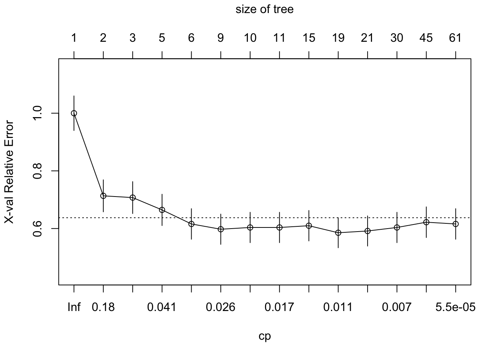
cp_opt <- tree1$cptable |> as.data.frame() |> slice(which.min(xerror)) |> dplyr::select(CP) |> as.numeric() tree_sel <- prune(tree1,cp=cp_opt) rpart.plot(tree_sel)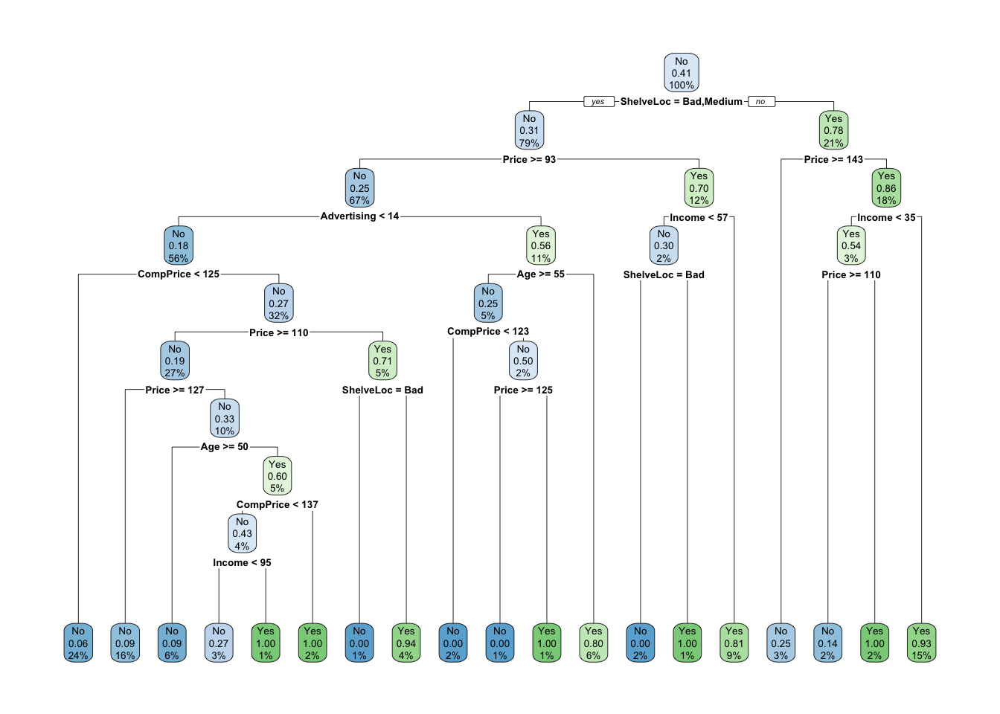
On considère la suite d’arbres
tree2 <- rpart(High~.,data=data1, parms=list(loss=matrix(c(0,5,1,0),ncol=2)), cp=0.01,minsplit=2)Expliquer les sorties des commandes suivantes. On pourra notamment calculer le dernier terme de la colonne rel error de la table cptable.
tree2$parms$prior 1 2 0.59 0.41 $loss [,1] [,2] [1,] 0 1 [2,] 5 0 $split [1] 1printcp(tree2)Classification tree: rpart(formula = High ~ ., data = data1, parms = list(loss = matrix(c(0, 5, 1, 0), ncol = 2)), cp = 0.01, minsplit = 2) Variables actually used in tree construction: [1] Advertising Age CompPrice Education Income Population [7] Price ShelveLoc Root node error: 236/400 = 0.59 n= 400 CP nsplit rel error xerror xstd 1 0.101695 0 1.00000 5.0000 0.20840 2 0.050847 2 0.79661 3.7119 0.20834 3 0.036017 3 0.74576 3.1653 0.20197 4 0.035311 5 0.67373 2.9449 0.19818 5 0.025424 9 0.50847 2.4915 0.18872 6 0.016949 11 0.45763 2.3559 0.18485 7 0.015537 16 0.37288 2.0339 0.17491 8 0.014831 21 0.28814 2.0339 0.17491 9 0.010593 23 0.25847 1.8983 0.16982 10 0.010000 25 0.23729 1.8263 0.16664Le critère est ici modifié, on utilise une erreur de classification pondérée pour choisir l’arbre. On rappelle que l’erreur de classification est définie par \[L(g)=P(g(X)\neq Y)=E[\alpha_11_{g(X)=0,Y=1}+\alpha_21_{g(X)=1,Y=0}]\] avec \(\alpha_1=\alpha_2=1\). Cette erreur donne donc le même poids aux deux erreurs possible (prédire 1 à tort ou prédire 0 à tort). Utiliser cette erreur revient donc à supposer qu’elles ont la même importance pour le problème considéré. Ce n’est bien entendu pas toujours le cas en pratique. La matrice loss contient les valeurs de \(\alpha_1\) et \(\alpha_2\) et modifier ces valeurs permettra de donner des poids différents à ces deux erreurs.
Avec cette nouvelle commande, on donne un poids de 5 pour une erreur et de 1 pour l’autre. On obtient le terme demandé avec
prev <- predict(tree2,type="class") conf <- table(data1$High,prev) confprev No Yes No 185 51 Yes 1 163loss <- tree2$parms$loss (conf[1,2]*loss[1,2]+ conf[2,1]*loss[2,1])/nrow(data1)/mean(data1$High=="No")[1] 0.2372881Comparer les valeurs ajustées par les deux arbres considérés.
summary(predict(tree_sel,type="class"))No Yes 240 160summary(predict(tree2,type="class"))No Yes 186 214Il y a plus de
Yesprédits dans le second arbre. Cela vient des changements dans la matrice loss : la perte pour prédireNoau lieu deYesest de 5 pour le second arbre. Cela signifie bien détecter lesYesest plus important pour cet arbre, c’est donc tout à fait normal qu’il prédise plus souventYesque le premier.Cette stratégie de changer la matrice de coût peut se révéler intéressante dans le cas de données déséquilibrées : une modalité de la cible sous-représentée par rapport à l’autre. En effet, pour de tels problèmes il est souvent très important de bien détecter la modalité sous-représentée. On pourra donc donner un poids plus fort lorsqu’on détecte mal cette modalité.
1.2.3 Calcul de la sous-suite d’arbres optimaux
Exercice 1.1 (Minimisation du critère coût/complexité) On considère l’algorithme qui permet de calculer les suites \((\alpha_m)_m\) et \((T_{\alpha_m})_m\) du théorème présenté en cours. Pour simplifier on se place en classification binaire et on considère les notations suivantes (en plus de celles présentées dans le chapitre) :
- \(R(t)\) : erreur de classification dans le nœud \(t\) pondérée par la proportion d’individus dans le nœud (nombre d’individus dans \(t\) sue le nombre total d’individus).
- \(T^t\) : la branche de l’arbre \(T\) issue du nœud interne \(t\).
- \(R(T^t)\) : l’erreur de la branche \(T^t\) pondérée par la proportion d’individus dans le nœud.
L’algorithme suivant présente le calcul explicite des suites \((\alpha_m)_m\) et \((T_{\alpha_m})_m\).
Initialisation : on pose \(\alpha_0=0\) et on calcule l’arbre maximale \(T_0\) qui minimise \(C_0(T)\). On fixe \(m=0\). Répéter jusqu’à obtenir l’arbre racine
- Calculer pour tous les nœuds \(t\) internes de \(T_{\alpha_m}\) \[g(t)=\frac{R(t)-R(T_{\alpha_m}^t)}{|{T_{\alpha_m}^t}|-1}\]
- Choisir le nœud interne \(t_m\) qui minimise \(g(t)\).
- On pose \[\alpha_{m+1}=g(t_m)\quad\text{et}\quad T_{\alpha_{m+1}}=T_{\alpha_m}-T_{\alpha_m}^{t_m}.\]
- Mise à jour : \(m:=m+1\).
Retourner : les suites finies \((\alpha_m)_m\) et \((T_{\alpha_m})_m\).
On propose d’utiliser cet algorithme sur l’arbre construit suivant
gen_class_bin2D <- function(n=100,graine=1234,bayes=0.1){
set.seed(graine)
grille <- 0.1
X1 <- runif(n)
X2 <- runif(n)
Y <- rep(0,n)
cond0 <- (X1>0.2 & X2>=0.8) | (X1>0.6 & X2<0.4) | (X1<0.25 & X2<0.5)
cond1 <- !cond0
Y[cond0] <- rbinom(sum(cond0),1,bayes)
Y[cond1] <- rbinom(sum(cond1),1,1-bayes)
donnees <- tibble(X1,X2,Y=as.factor(Y))
px1 <- seq(0,1,by=grille)
px2 <- seq(0,1,by=grille)
px <- expand.grid(X1=px1,X2=px2)
py <- rep(0,nrow(px))
cond0 <- (px[,1]>0.2 & px[,2]>=0.8) |
(px[,1]>0.6 & px[,2]<0.4) |
(px[,1]<0.25 & px[,2]<0.5)
cond1 <- !cond0
py[cond0] <- 0
py[cond1] <- 1
df <- px |> as_tibble() |> mutate(Y=as.factor(py))
p <- ggplot(df)+aes(x=X1,y=X2,fill=Y)+
geom_raster(hjust=1,vjust=1)
return(list(donnees=donnees,graphe=p))
}
don.2D.arbre <- gen_class_bin2D(n=150,graine=3210,bayes=0.05)$donnees
set.seed(123)
T0 <- rpart(Y~.,data=don.2D.arbre)
rpart.plot(T0,extra = 1)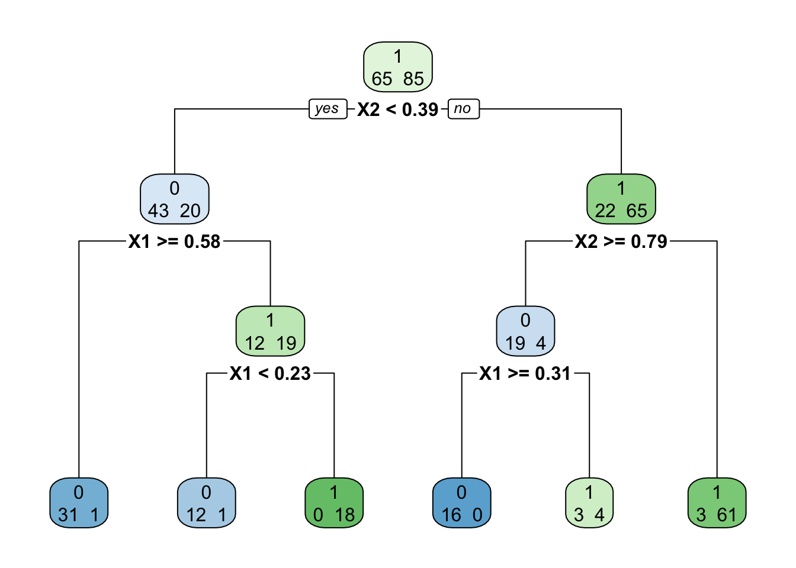
Cet arbre n’est pas l’arbre maximal mais la manière d’élaguer est identique.
Calculer pour les 5 nœuds internes de \(T_0\) la fonction \(g(t)\).
On numérote les nœuds internes de haut en bas et de gauche à droite. On commence par le nœud \(t_5\), celui qui correspond à la coupure
X1>=0.31. On a \[R(t_5)=\frac{4}{23}\ \frac{23}{150}=\frac{4}{150}\quad\text{et}\quad R(T_0^{t_5})=\frac{3}{23}\ \frac{23}{150}=\frac{3}{150}.\] On déduit \[g(t_5)=\frac{4/150-3/150}{2-1}=\frac{1}{150}.\] On fait de même pour les 4 autres nœuds internes et on obtient les résultats suivants :t \(t_1\) \(t_2\) \(t_3\) \(t_4\) \(t_5\) \(R(t)\) 65/150 20/150 22/150 12/150 4/150 \(R(T_0^{t})\) 8/150 2/150 6/150 1/150 3/150 \(|{T_0^t}|\) 6 3 3 2 2 \(g(t)\) 11.4/150 9/150 8/150 11/150 1/150 En déduire la valeur de \(\alpha_1\) ainsi que l’arbre \(T_{\alpha_1}\).
\(g(t)\) est minimum en \(t_5\) On a donc \(\alpha_1=g(t_5)\) et \(T_{\alpha_1}=T_0-T_0^{t_5}\), c’est-à-dire \(T_0\) auquel on enlève la coupure
X1>=0.31.Retrouver cette valeur en utilisant la fonction
printcpet représenter l’arbre \(T_1\) en utilisantprune.On se rappelle que
printcpnormalise toutes les erreurs par rapport à celle de l’arbre racine, par conséquent la valeur de \(\alpha_1\) affichée parprintcpsera \[\frac{1}{150} \, \frac{150}{65}=\frac{1}{65}\approx 0.01538.\] En effet :printcp(T0)Classification tree: rpart(formula = Y ~ ., data = don.2D.arbre) Variables actually used in tree construction: [1] X1 X2 Root node error: 65/150 = 0.43333 n= 150 CP nsplit rel error xerror xstd 1 0.353846 0 1.00000 1.00000 0.093370 2 0.230769 1 0.64615 0.70769 0.086883 3 0.138462 2 0.41538 0.50769 0.078053 4 0.015385 4 0.13846 0.21538 0.054812 5 0.010000 5 0.12308 0.26154 0.059730Et on peut visualiser l’arbre avec
T1 <- prune(T0,cp=0.015385) rpart.plot(T1,extra = 1)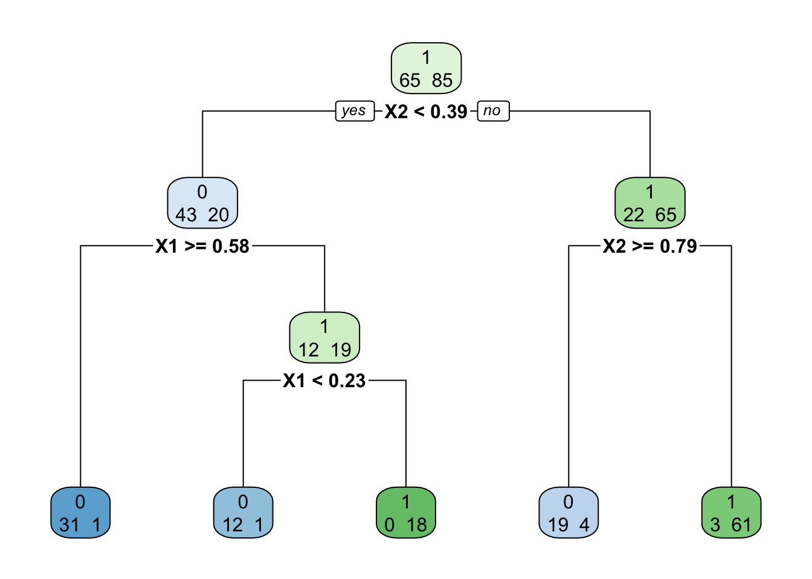
Figure 1.1: L’arbre \(T_{\alpha_1}\). Faire le même travail pour calculer \(\alpha_2\) et \(T_{\alpha_2}\).
On se place maintenant dans \(T_{\alpha_1}\) qui contient 4 nœuds internes et on calcule \(g(t)\) pour ces 4 nœuds :
t \(t_1\) \(t_2\) \(t_3\) \(t_4\) \(R(t)\) 65/150 20/150 22/150 12/150 \(R(T_{\alpha_1}^t)\) 9/150 18/150 7/150 1/150 \(|{T_{\alpha_1}^t}|\) 5 3 2 2 \(g(t)\) 14/150 9/150 15/150 11/150 On supprimera ici \(t_2\) avec on posera \(\alpha_2=9/65\approx 0.13846\) (on normalise). On peut tracer \(T_{\alpha_2}\) :
T2 <- prune(T0,cp=0.138462) rpart.plot(T2,extra = 1)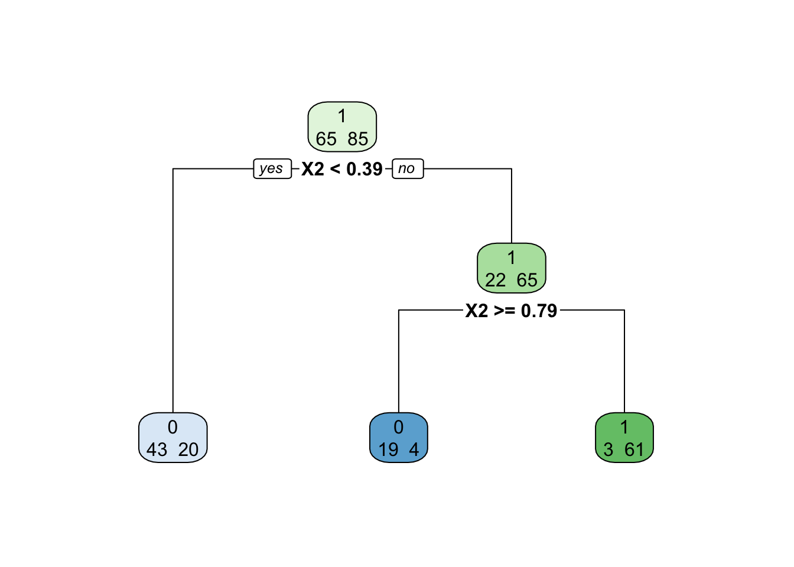
Figure 1.2: L’arbre \(T_{\alpha_2}\).